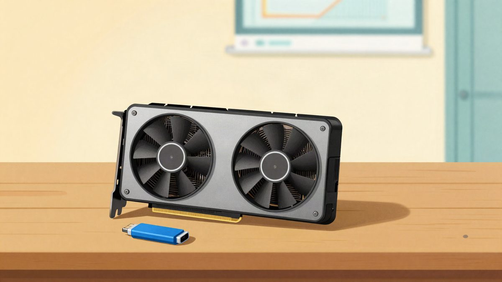

RTX 3080 je dobio DLSS frame generation: mod od 7 MB navodno daje do 50 % više FPS-a

Testeri su pomoću open-source patcha Universal MFG Unlocker pokrenuli DLSS frame generation na šest godina staroj kartici RTX 3080, iako ga Nvidia službeno veže uz novije kartice. U dvije igre frame rate je porastao za 43 do 51 posto. Rezultati potječu od pojedinačnih testera, a Nvidia se još nije očitovala.
Testeri u inozemstvu uspjeli su na kartici RTX 3080 pokrenuti DLSS frame generation, funkciju koju Nvidia službeno ne podržava na Ampere arhitekturi. Koristili su open-source patch Universal MFG Unlocker. Kartica je na tržištu već šest godina.
Frame rate u nekoliko DX12 igara porastao je za oko 50 posto. Nvidia je pri lansiranju serije RTX 40 tvrdila da frame generation traži toliko hardvera da ga mogu pokretati samo najnovije kartice s novim optical flow acceleratorom. Alat mijenja način na koji se funkcija poziva, a testeri tvrde da stariji RTX chipovi u određenim uvjetima ipak mogu s njom raditi. To dovodi u pitanje Nvidijinu tvrdnju o hardverskom ograničenju.
Rezultati testa
Testirana je RTX 3080 Founders Edition na ultrawide OLED monitoru rezolucije 3440×1440. U remakeu igre Assassin's Creed Black Flag frame rate je bez frame generationa iznosio 79 FPS. S uključenim 2x frame generationom popeo se na 119 FPS, što je povećanje od 50,6 posto. U igri A Plague Tale: Requiem porastao je sa 77 na 110 FPS, odnosno za oko 42,8 posto.
Testeri kažu da je originalni DLSS frame generation kvalitetniji od FSR frame generationa, koji se ranije na starijim karticama pokretao preko alata OptiScaler. FSR u brzim scenama, primjerice u trkaćim igrama, zna prikazati preklapanje sjena ispod vozila i grešku u slici na rubovima. DLSS frame generation je u istim uvjetima davao jedva primjetne artefakte, a input lag u single-player igrama nije bio izražen.
Ograničenja
Alat još nije kompatibilan sa svim igrama. U testu s Forza Horizon 6 igra se rušila pri pokretanju nakon što je učitana izmijenjena DLL datoteka.
Patch mijenja core library datoteke igre, pa ga se ne smije koristiti u online igrama s anti-cheat sustavom. Postoji velika vjerojatnost da bi račun bio blokiran.
Izvor: MyDrivers (快科技)
Povezani članci
- Nvidia RTX Remix 1.6 je dobio DLSS 5, a Minecraft Java Edition prvi put dobiva path tracing24. listopada 2026.
 The Elder Scrolls VI dobio ime: Sentinel, a radnja se seli u Hammerfell3. studenoga 2026.
The Elder Scrolls VI dobio ime: Sentinel, a radnja se seli u Hammerfell3. studenoga 2026. U SAD-u je nestao kamion sa šest paleta Nvidia GPU-a vrijednih 11,4 milijuna dolara6. studenoga 2026.
U SAD-u je nestao kamion sa šest paleta Nvidia GPU-a vrijednih 11,4 milijuna dolara6. studenoga 2026.